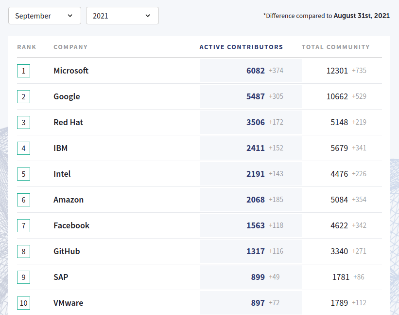

Открытый код:
азбука вежливости
Игорь Стариков
Libre Office, ClickHouse, nginx, Firefox, Python,
Linux, Android, TensorFlow, Kubernetes, Django…

«Капитал боится отсутствия прибыли или слишком маленькой прибыли, как природа боится пустоты».
Томас Даннинг
Прежде
- не видел способа заработать
- боялся потерять
- наблюдал движение Free Software
Потом
Конкуренция
Не грусти
Допустим, приложением пользуются
- есть ресурс с дистрибутивом…
- …и описанием
- есть инструкция по установке и настройке
Доступность проекта
Доступность кода
- документация в коде
- комментарии
- разметка типов в дин. языках
- стиль кода
Принципы формирования кода
- наименьшей неожиданности
- разумных умолчаний
Тесты
- должны быть
- придают уверенность
- должны пополняться
- рекомендована автоматизация
Тоже важно
- нумерация версий:
1.2.3
- история изменений —
CHANGELOG
- частота выпусков
- лицензия
- упоминание создателей —
AUTHORS
КОД
- Код — следить, холить, тестировать
- Открытость — также и в общении
- Документация — для пользователей и соратников
Открытый код: азбука вежливости